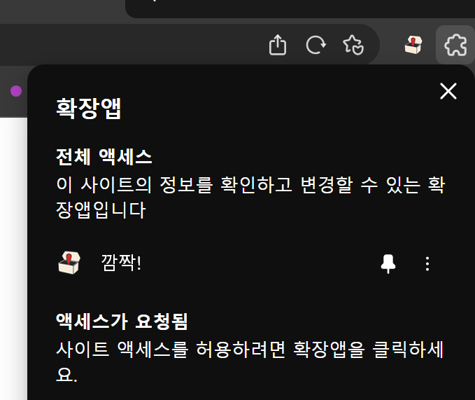

Whale에서 더 빠르게 열기
깜짝!을
브라우저에 고정하세요
오른쪽 위 퍼즐 모양 아이콘을 누르고, 깜짝! 옆의 핀을 고정하면 툴바에서 바로 열 수 있습니다.
- 1오른쪽 위 퍼즐 아이콘 누르기
- 2깜짝! 오른쪽 핀 고정하기
- 3상단의 깜짝! 아이콘 열기

Whale에서 더 빠르게 열기
오른쪽 위 퍼즐 모양 아이콘을 누르고, 깜짝! 옆의 핀을 고정하면 툴바에서 바로 열 수 있습니다.
